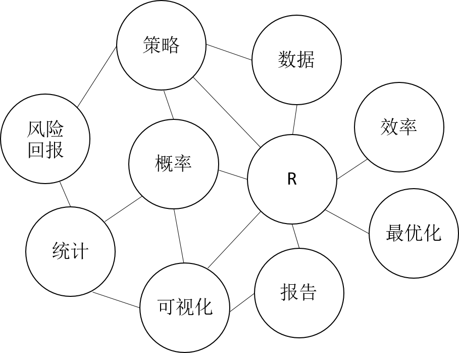
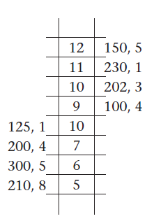

第1章 总览
我写作本书的目的，是为读者提供一个适用于业界及学术界，涵盖编程、金融和数学的基础工具箱。内容涉及R编程语言，和R环境——一种用来处理金融市场数据和解决量化分析师和交易员们平日遇到常见问题的手段。随后章节给出的这些工具，是我从事量化交易和编写程序这些年里认为有用而希望推荐给读者的。本书主要从量化分析，而非学术角度撰写。书稿大部分内容基于我在芝加哥落约拉大学（Loyola University in Chicago）时教授量化金融这门研究生课程时的授课笔记。
本书属于入门级别，并不要求读者具备编程经验或者高级数学知识。话虽如此，但如果 读者有相关知识储备，对相关章节的理解会更轻松。在数学方面，我推荐读者先回顾基本微积分、线性代数、统计学和概率论。在编程方面，熟悉VBA、Python和SQL会有所帮助。
本书也面向富有行业经验、需要分析金融数据或者通过R脚本自动化处理常规工作的交易人员。
交易和编程本身话题宽泛，我并不打算给出每个概念的详细解释。请勿梦想通过阅读本书成为编程高手或认为听从作者建议就能获利。本书只负责提供有助于分析、实施和展示交易策略或其他相关量化主题的工具和思路。图1.1总括地展示了后续章节涉及的话题。

图1.1 主题图
任务综述
我会试着提出一个比较模糊的概念——构造交易策略，然后一些具体的问题就自然浮现。比如，怎么把我的交易想法自动化？我该用什么编程工具，基于何种理由？我需要什么数学、金融、编程工具来评估交易策略？测试交易策略的数据从何而来？如何知道我的策略是好的？怎么向他人展示相关结果？
大部分编程书籍可以视为本书的参考书。根据索引中的关键词，读者就能找到感兴趣的主题，定位书页，展开阅读。不过，我更推荐读者从前往后，一章不落地顺序阅读本书。通过在R语言中完成规定的自动化任务来熟悉量化金融的思维方式，深入背景，思考现实问题，并建立解决问题的信心。作者良苦用心，日月可鉴。
一个明智的做事方法是在做事之前先在大脑中画出目标相关的地图，在图上勾勒出前进的方向和路上可能遇到的障碍。与此类似，本书的目标之一，是解决量化交易员们关心的一些典型问题，积累必要的编程技能。另一个目标，是学会操作金融数据，用数学手段来评估交易策略。
为了将目标表述地更具体一些，我尝试给出一个简明扼要的任务综述：
我们将针对市场上基于流动性工具的投资组合，提出自动化交易的策略。这些策略将会是高效，稳健，可拓展的；更重要的是，低风险高收益。
读罢，你是不是有一堆问题：
- 什么是市场？
- 什么是工具？以及，流动性工具？
- 什么是交易策略，我怎么着手制造一个交易策略？
- 怎么定义盈利能力？
- 什么是风险？具体地，如何量化交易策略的风险？
- 如何自动化交易策略？
- 怎样理解效率？
金融市场和工具
市场是一个有形或虚拟的场所，参与者在这里进行交易。在古希腊，市民们聚集在市场上，相互之间交换蜂蜜、橄榄油等农产品，以及艺术品之类的物品。交易可以是以物易物，也可以通过货币完成。市集的概念在古今中外历朝历代并不鲜见。这类市场和今天的实体市场类似，参与者必须见面，双方商定好价格和交付条件，最后确认交易。
今天，世界上许多实体市场正在给虚拟市场让路。这股浪潮中有亚马逊，eBay和阿里巴巴。在这些巨型的在线市场上，买卖双方完全通过电脑来互动和谈生意。过去几年金融市场也有类似的趋势。老的期货、股票、期权交易所正在被电子平台取代。表1.1大致列出了芝加哥商品交易所（CME）电子和楼层交易量的对比。Globex为芝加哥商业交易（ChicagoMercantile Exchange，CME）电子平台。
对于一个有组织的市场，其首要任务是撮合有意向的参与者，按照协定的价格进行商品或服务交易。其次，市场应该保证交易有秩序地发生。电子金融市场完全符合以上描述。
近年来，上百家证券交易所和代理电子机构如雨后春笋般涌现于全球各地。表1.2罗列了几处有名的证券交易机构。
表1.3罗列了著名的期货交易所。
这些交易所使得标准化的金融合约高效而有序地履行。金融工具包含股票、期货、债券、货币，单纯期权（vanilla options）、奇异期权（exotic options）、互换（swaps）、互换期权（swaptions）等等。其中一些工具较另一些逐渐更受追捧。例如，芝加哥商品交易所的E-mini金融期货和欧洲美元合约，是世界上流动性最好的合约。投资者和交易员们基于这些工具经营每日市场和利率风险。下面的表格描绘了一些芝加哥商品交易所期货合约的日均成交量。
流动性是对以有利的价格购买或出售一定数量金融工具的难易程度的度量。它也可以看作是成交量的一个代替。投资者和交易员喜欢持有流动性好的金融产品，因为就算他们默默买进卖出很大的量，也不会影响该金融产品的价格。
表1.1 Globex 估计交易量
| 年 | 芝加哥商品交易所交易量？ | 其他（%） |
|---|---|---|
| 1992 | 0.2 | 99.8 |
| 1993 | 0.4 | 99.6 |
| 1994 | 0.5 | 99.5 |
| ... | ... | ... |
| 2007 | 78 | 22 |
| 2008 | 82 | 18 |
| 2009 | 86 | 14 |
| ... | ... | ... |
| 2014 | 93 | 7 |
表1.2 主要证券交易所
| 国家 | 名称 | 网站 |
|---|---|---|
| 美国 | NYSE | www.nyse.nyx.com |
| 美国 | NASDAQ | www.nasdaqomx.com |
| 美国 | BATS | www.batstrading.com |
| 美国 | Direct Edge | www.directedge.com |
| 日本 | TSE | www.tse.or.jp/english |
| 英国 | LSE | www.nasdaqomx.com |
| 英国 | NYSE Euronext | www.euronext.com |
表1.3 主要期货交易所
| 国家 | 名称 | 网站 |
|---|---|---|
| 美国 | CME | www.cmegroup.com |
| 美国 | ICE | www.theice.com |
| 英国 | Euronext | www.euronext.com |
| 德国 | Eurex | www.eurexchange.com |
表1.4 活跃期货量
| 合约 | 活跃合约代码 | 交易量 |
|---|---|---|
| Eurodollar | GE | 2,482,899 |
| E-mini S&P 500 | ES | 1,804,469 |
| 10-Year treasury note | ZN | 1,322,388 |
| 5-Year treasury note | ZF | 773,183 |
交易策略
金融机构向来是世界上受到最严格监管的单位，凡事皆有利弊，管制虽然镇压了竞争和创新，却使市场参与者对他们交易的正当性和公平性更有信心。对交易正当性有信心非常重要，它确保投资者和交易员在电子交易平台的发展中投入大量时间和金钱，而这些平台将积极活跃于电子市场上。当投资者或交易员发现一个机会，对某些金融工具可以合法执行一个买入或卖出订单时，交易策略就发生了。随后，一旦交易员发现盈利点，这些交易也必须能够在某个时间点被抵消。交易策略的持有（holding）期从几个微秒（译者注：百万分之一秒）到数年不等。交易策略有多种类型：长期、短期、投机、高频、低延时等等。用最简单的话说，一个交易策略是交易人员利用的一组既定规则，以期在金融市场获利。这些策略或利用市场的结构效应，或运用金融工具之间的统计关系，抑或仰靠外部信息。
高频交易
大部分人认为，高频交易是在很短时间内发生的交易行为。实际上，这个概念指代的内容更为宽泛。持有期不仅限于随后数秒。通常，交易在很短时间内进入市场，但会持续相当长一段时间。该短语也指为了机会而持续发酵市场，只在机会出现时发生一定数量交易的算法。这些算法仍然高频率地处理市场数据，但并不会以此频率执行交易。让你再晕一点，高频交易有时也称为低延迟型交易。由于这些交易方法总是关乎高速计算机和网络的使用，命名上的冲突也难以避免。大部分策略可进一步分为做市型（market-making）策略，接受价格型（market-taking）策略和投机型（opportunistic）策略。
在一个高频做市型策略中，交易算法持续不断地提供流动性给其他市场参与者。风险在于主动投资者（交易另一边的）比被动的（做市）程序有更多内部信息。鉴于这种信息不对等，一些交易所向做市商提供补偿。相比接受价格型交易者，做市型策略获利要小一些。但是，每单获利的不足可以在数量上弥补。这样一个做市策略可能愿意获得每单一个tick的交易优势（edge）。一个tick指交易所允许的某工具的最小价格增量。精算中，由于不利价格变动，在既定条件下，这些策略可能只会捕捉到tick的少量信息。
无论交易机会如何，接受价格型策略都可以发挥作用。分析市场数据的算法或者关于牛市熊市的新闻事件，都会产生买卖信号，从而导致交易机会。对这种策略，即时性通常比价格更为关键。比起做市型策略，接受价格型策略每单需要更多交易优势。
关于订单（orderbook）

图1.2 一份订单
一份订单（orderbook）可以视为所有市场参与者的买卖限定单。订单是交易人员和交易所使用的一种方便的数据结构，用来点击交易和匹配买卖双方。一份订单可以是所有买家在左边，所有卖家在右边。图1.2列出了一个垂直方向配置的每层价格，交易量和交易次数。
最优买入价是被动交易者愿意买入的最高价格。最优卖出价格是被动交易者愿意卖出的最低价格。在我们的例子中，最优买价是8，最优卖价是9. 最优买价和最优卖价的数量分别是125和100。我们还观察到，有1个订单上有最优买价，4个不同的订单上有最优卖价。任何时候一旦有数字的变化，我们说一个市场数据事件已经发生。一个市场数据事件可能是在7的价格水平取消一手（译者注：一个买卖单位，英文为a lot），或者在第二个最优卖价到来时发生一个新订单。在这种情况下，反映在第二最优买价的新的数量将成为199，第二位的最优卖价数量也将上升。由于这么多个产品正在发生交易，很显然通过交易所传输和存储的信息量是巨大的。不仅如此，交易所还必须时时反应订单状态变化。要完成所有复杂而艰巨的任务，能处理和存储所有数据的基础设施功不可没。
自动化交易
不久前，绝大多数交易发生在坑里。典型的交易流程如下：投资者会将交易情况通过电话或当面告知他们的经纪人。经纪人随后将信息传给坑里的同事。如果一个交易对手想交易的另一方，则将更改的指令退回给经纪人。同时，经纪人会把填充价格和数量传达给客户。
今天，技术使我们能够以更快的速度进入和退出交易。自动化交易平台，如 Interactive Brokers, Etrade, Ameritrade之类，可以快速而低成本地下订单。交易所自己的集中式匹配引擎使买卖双方之间的匹配几乎瞬间发生。匹配引擎是一种电脑系统，它掌握所有订单的情况，确保准确数量的合约即时分配给买方和卖方。一旦一笔交易完成，订单确认报告就会传回给发起这笔交易的交易员。除报告之外，交易所也传回包括市场数据和交易所相关状态的其他类型信息。
许多自营交易公司、银行和对冲基金与交易所的互动是通过直接连接交易所的匹配引擎和市场数据源完成的。交易所利用这些机构”对速度的需求”，为交易员提供高价位的配套设施，从而赚取一个巨大的溢价。简单地说，交易员将他们的服务器尽量靠近交易所。如果一个特定的交易策略对延迟性非常敏感，那么这种服务就物有所值。
自动化交易行业目前对编程、数学和批判性思考技能的依赖和对财务技能的需求不相上下，甚至更高。各大对冲基金和交易公司纷纷将工程、计算机科学、物理和应用数学等专业的程序员纳入麾下。大多数情况下，这些技术人员负责处理网络基础设施，数据存储，系统集成，数据处理，可视化和算法开发。
在今天的电子市场上，交易员，技术专家，宽客的角色确实变得模糊。从纷乱的信息源中处理、分析和展示信息，以及基于结果开发交易策略的能力在现实中大受追捧。我估计，在不太遥远的将来，交易员这个词将意味着跟今天完全不同的含义。交易员将可能是一个精明的技术人员，有着敏锐的市场意识，能够采用数据驱动的方法建立、监控和开发有利可图的交易策略。
如果读者想要了解关于市场连通性、执行、算法交易和自动化的全面讨论，推荐Barry Johnson的书：Algorithmic Trading and DMA: An Introduction to Direct Access Trading Strategies ，这里是该书网站：http://www.algo-dma.com.
数据从哪儿来？
财务数据是交易业务的命脉。正式交易之前，比较重要的一个步骤是摸索和感觉某支策略在生产环境中的行为。可以通过分析历史数据，监测时时数据、市场上发生的事件、以及经济方面的新闻布告以达到目的。那么这些数据从哪儿来？更具体地，我们去哪里搜集股票、期权、期货价格，以及其他经济指标的时间序列？一些广受欢迎的免费每日股价追踪网站摘录如下：
- Yahoo Finance: http://finance.yahoo.com/
- Quandl: http://www.quandl.com/
- GoogleFinance: http://www.google.com/finance
- Federal Reserve Bank Of St.Louis: http://research.stlouisfed.org/fred2/
我们将在本书中重点使用雅虎财经（Yahoo Finance）。大部分数据是单一股票名和交易所交易基金（ETF）的每日开盘、最高、最低、收盘价格。这些数据是免费的，但天下没有真正免费的午餐。我们需要警惕数据的质量，并注意在过程中对数据进行清洗、过滤和删除可能的错误。
最佳备选方案是自己抓取数据。这需要大量基础设施，而且费时费力。很多机构交易员、银行和自营交易公司采用这种方法。他们直接连接全世界范围的交易所。通常，交易所会配备服务器，这些机器将数据记录到本地磁盘上。随后原始数据被处理，清洗，并存储在数据库中，为未来的检索做准备。
折中的解决方案是从第三方供应商获得数据。供应商很多，他们提供数据的质量却参差不齐。一些值得推荐的数据供应商摘录如下：
- TickData,Inc: http://www.tickdata.com/
- Bloomberg: http://www.bloomberg.com/enterprise/data/
- ThomsonReuters: http://thomsonreuters.com/financial/market-data/
- CMEGroup: http://www.cmegroup.com/market-data/datamine-historical-data/
- YSEMarketData: http://www.nyxdata.com/Data-Products/NYSE
- HanweckAssociates: http://www.hanweckassoc.com/
- ActivFinancial: http://www.activfinancial.com/
- Markit: http://www.markit.com/
总结
本章前几小节阐明了这本书的目的和目标受众。书中推荐了一些数学和编程资源，它们对理解后面章节中的技术讨论会有所帮助。为推动后续分析，我们提出了任务综述用以概述理想的交易策略的最终目标。简要解释了金融市场，金融工具和交易策略。本章最后讨论了高频交易和策略的自动化，并简述了如何获取每日及日间金融数据。
翻译：杨环 审校：邓一硕